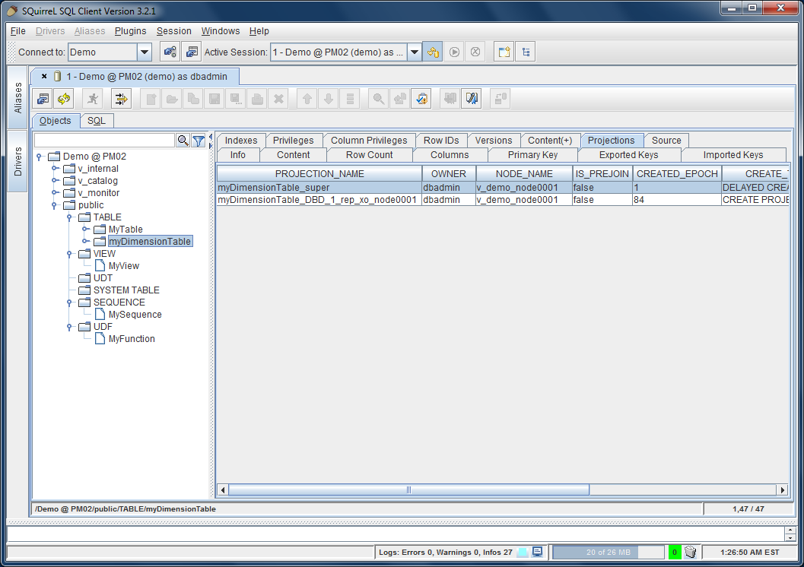
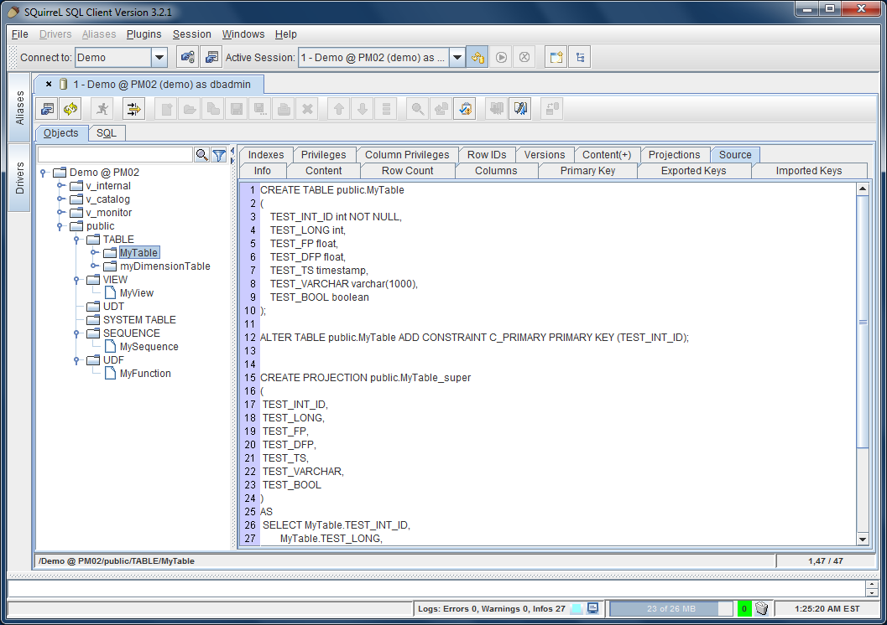
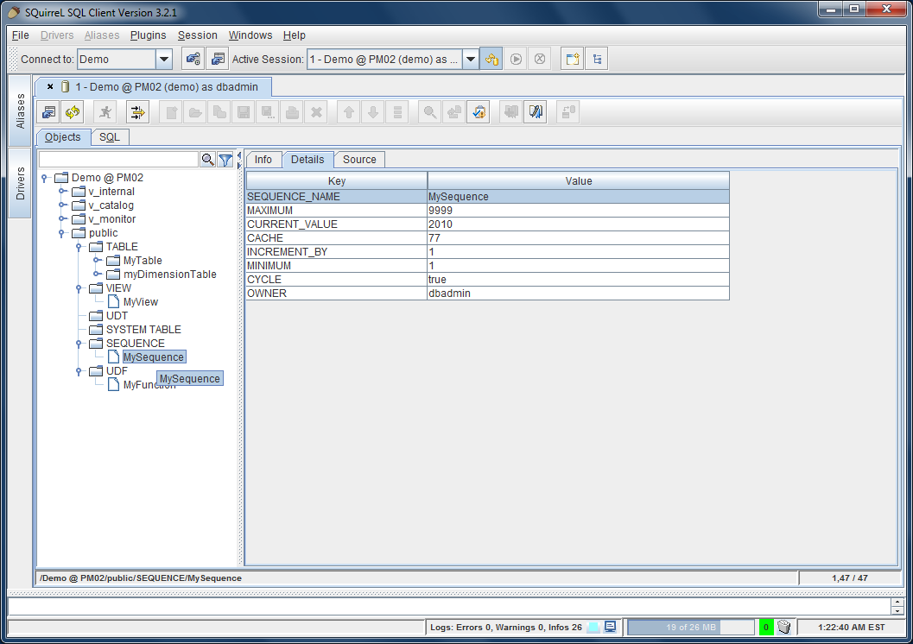
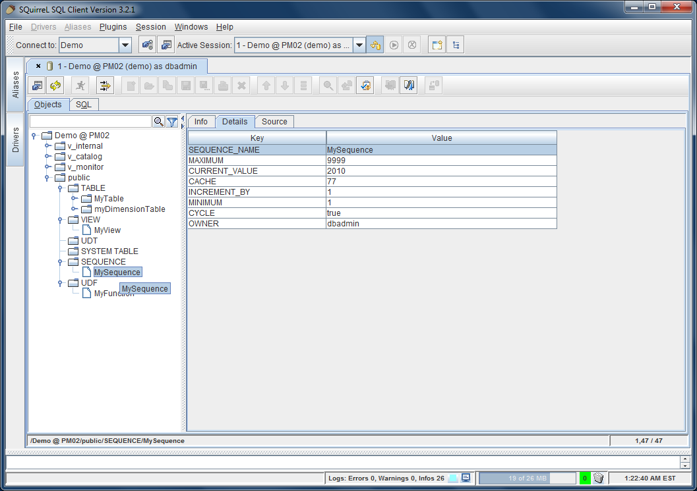

Vertica Plugin
Introduction
The Vertica plugin adds Vertica-specific functionality to the SQuirreL SQL Client.
The plugin requires Vertica 4.1 PS1 or later release and read access to the system schema
V_CATALOG is required for this additional functionality to work correctly.
Object Tree Enhancements
Vertica plugin adds the following objects to the Object Tree:
- SYSTEM TABLE
- SEQUENCE
- UDF (User Function)
The screenshot below shows the database Demo with default schemas present in Vertica databases:


Additional Tabs
Vertica plugin adds new tabs to all types of objects in the Object Tree as follows:
Projections Tab
The Projections Tab is only available a Table object. It shows essential details of all projections anchored on the given table.
System tables do not have projections (they are effectively relational "views" of internal in-memory structures).
The Projections Tab for a Table is similar "in spirit" to the Definition Tab for a Sequence or UDF.

Source Tab
The Source tab shows DDL (data definition SQL) for each object - Table, Projection, View, Sequence, and User Functions.
The generated DDL is guaranteed to work and may be used for cloning an object. Source DDL for a table includes its projection(s).
DDL for system tables is not provided. Source DDL examples for various object types are below:



Details Tab
The Details tab provides the definition for Projection, Sequence, and UDF objects. For example:
 


Content(+) Tab
The Content Plus tab is available for all relational objects in the Object Tree - Tables, Views, and System Tables.
It's essentially similar to the "stock" Content tab, but includes a Vertica specific enhancement to address a uability
issue when viewing a table with very large number of records, e.g. a fact table with billions of rows.
Content(+) tab enforces "SQL results - Limit rows" setting in the New Session Properties more efficiently by injecting
the LIMIT N clause into the SQL query, thus making the database server aware of the client's intent to use only the first few
rows of the result set.
Users are advised to use the Content(+) tab instead of the "stock" Content tab.